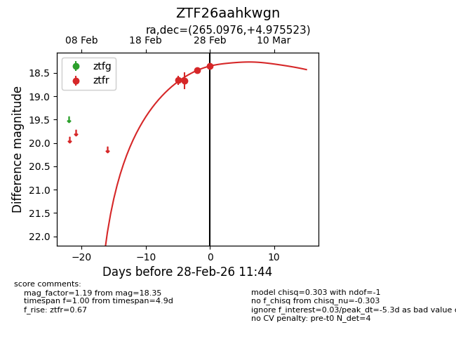
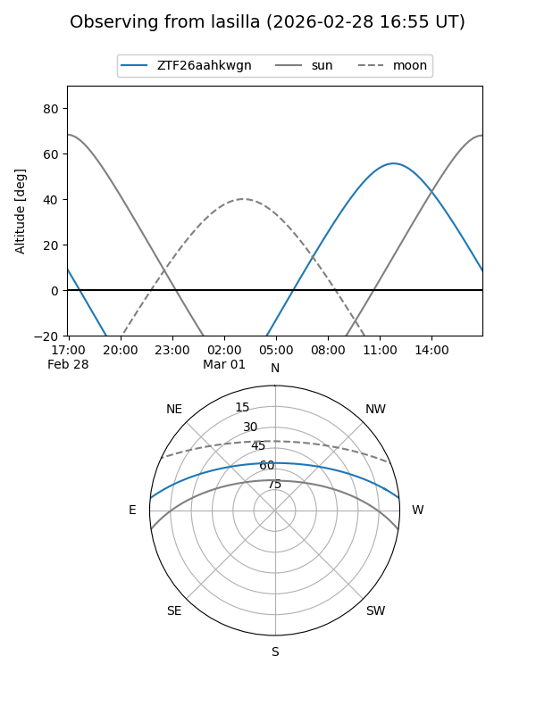
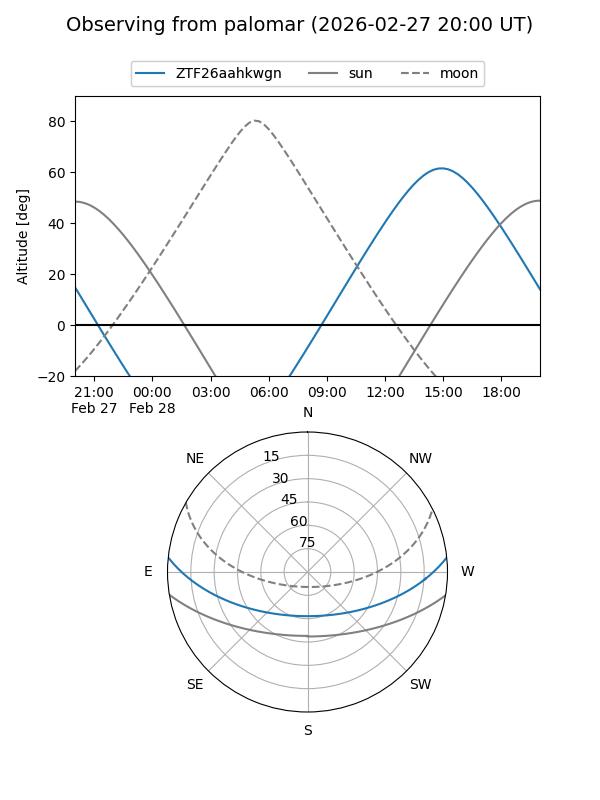
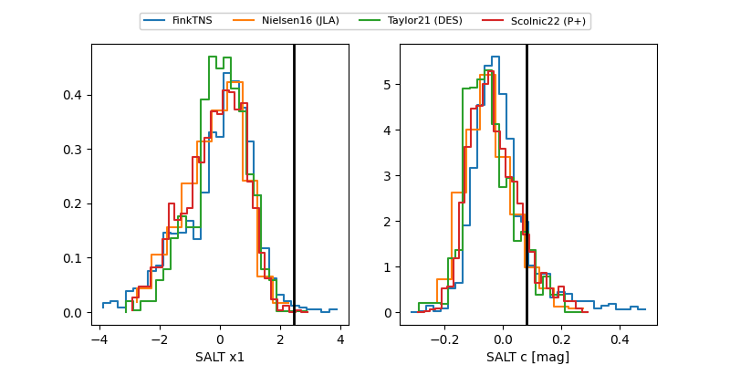

ZTF26aahkwgn
Target ZTF26aahkwgn at 2026-02-28 11:45
Aliases and brokers:
FINK: link
Lasair: link
ALeRCE: link
alt names
ZTF26aahkwgn (ztf,fink_ztf)
Coordinates:
equatorial (ra, dec) = 265.0976,+4.97552
equatorial (HMS+DMS) = 17:40:23.42,+04:58:31.88
galactic (l, b) = (29.2296,+18.06080)
Flags:
Photometry:
last ztfr=18.35
4 ztfr detections
Lightcurve

Visibility


Additional plots
